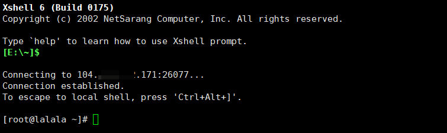
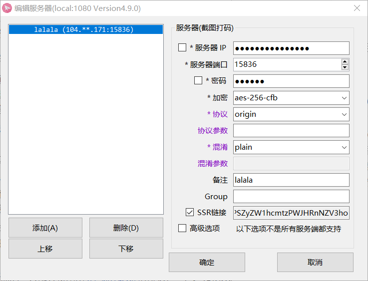

使用v2ray,shadowsock及tor
v2ray,shadowsock可以代理网络请求，访问墙外网站。
目录
v2ray,shadowsock比较
相对于shadowsock，v2ray更加稳定安全，不易被墙。推荐使用v2ray。
搭建前
vps选购
vps选购参考https://www.10besty.com/best-vps-hosting-services/
连接服务器
xshell是一个终端模拟软件，可用于连接和管理服务器。Xshell下载
连接过程：
- 新建
- 输入ip地址及端口号
- “用户身份验证”，输入服务器用户名密码
- 如果弹出安全警告接受并保存

- 连接成功
v2ray
安装
bash <(curl -L -s https://install.direct/go.sh)
出现端口和用户id
PORT:31040
UUID:c2ffda3e-09be-4a32-b2de-508dca39d42e
启动
[root@lalala ~]# service v2ray start
Starting v2ray: [ OK ]
查看配置文件
cat /etc/v2ray/config.json
配置文件中”inbounds”下的这几项信息需要留意：port端口、clients中的id用户id和alterId额外id，它们将在配置客户端时用到。
控制 V2Ray 的运行 service v2ray start|stop|status|reload|restart|force-reload
卸载方法 service v2ray stop chkconfig v2ray off rm -rf /etc/init.d/v2ray rm -rf /etc/v2ray (配置文件) rm -rf /usr/bin/v2ray (程序) rm -rf /var/log/v2ray (日志)
客户端
Windows：v2rayN
Android：v2rayNG
使用大同小异
- 服务器，添加[VMess]服务器
- 输入地址，端口，用户id，额外id，其他默认
- 连接
出现错误
安装脚本在创建守护服务的时候不支持CentOS6
Error: Nothing to do
Failed to install daemon. Please install it manually.
进入目录将/etc/init.d
[root@lalala init.d]# vi v2ray
下述代码保存为v2ray
#!/bin/sh
#
# v2ray Startup script for v2ray
#
# chkconfig: - 24 76
# processname: v2ray
# pidfile: /var/run/v2ray.pid
# description: V2Ray proxy services
#
### BEGIN INIT INFO
# Provides: v2ray
# Required-Start: $network $local_fs $remote_fs
# Required-Stop: $remote_fs
# Default-Start: 2 3 4 5
# Default-Stop: 0 1 6
# Short-Description: V2Ray proxy services
# Description: V2Ray proxy services
### END INIT INFO
DESC=v2ray
NAME=v2ray
DAEMON=/usr/bin/v2ray/v2ray
PIDFILE=/var/run/$NAME.pid
LOCKFILE=/var/lock/subsys/$NAME
SCRIPTNAME=/etc/init.d/$NAME
RETVAL=0
DAEMON_OPTS="-config /etc/v2ray/config.json"
# Exit if the package is not installed
[ -x $DAEMON ] || exit 0
# Read configuration variable file if it is present
[ -r /etc/default/$NAME ] && . /etc/default/$NAME
# Source function library.
. /etc/rc.d/init.d/functions
start() {
local pids=$(pgrep -f $DAEMON)
if [ -n "$pids" ]; then
echo "$NAME (pid $pids) is already running"
RETVAL=0
return 0
fi
echo -n $"Starting $NAME: "
mkdir -p /var/log/v2ray
$DAEMON $DAEMON_OPTS 1>/dev/null 2>&1 &
echo $! > $PIDFILE
sleep 2
pgrep -f $DAEMON >/dev/null 2>&1
RETVAL=$?
if [ $RETVAL -eq 0 ]; then
success; echo
touch $LOCKFILE
else
failure; echo
fi
return $RETVAL
}
stop() {
local pids=$(pgrep -f $DAEMON)
if [ -z "$pids" ]; then
echo "$NAME is not running"
RETVAL=0
return 0
fi
echo -n $"Stopping $NAME: "
killproc -p ${PIDFILE} ${NAME}
RETVAL=$?
echo
[ $RETVAL = 0 ] && rm -f ${LOCKFILE} ${PIDFILE}
}
reload() {
echo -n $"Reloading $NAME: "
killproc -p ${PIDFILE} ${NAME} -HUP
RETVAL=$?
echo
}
rh_status() {
status -p ${PIDFILE} ${DAEMON}
}
# See how we were called.
case "$1" in
start)
rh_status >/dev/null 2>&1 && exit 0
start
;;
stop)
stop
;;
status)
rh_status
RETVAL=$?
;;
restart)
stop
start
;;
reload)
reload
;;
*)
echo "Usage: $SCRIPTNAME {start|stop|status|reload|restart}" >&2
RETVAL=2
;;
esac
exit $RETVAL
添加执行权限,开机启动
[root@lalala init.d]# chmod a+x v2ray
[root@lalala init.d]# chkconfig v2ray on
[root@lalala init.d]# service v2ray start
shadowsock
安装
使用秋水逸冰teddysun的shadowsocks-all.sh一键安装
运行3个命令。
wget --no-check-certificate -O shadowsocks-all.sh https://raw.githubusercontent.com/teddysun/shadowsocks_install/master/shadowsocks-all.sh
chmod +x shadowsocks-all.sh
./shadowsocks-all.sh 2>&1 | tee shadowsocks-all.log
输入数字选择参数
Which Shadowsocks server you'd select:
//选择版本
Please enter password for ShadowsocksR
//设置密码，回车使用默认密码teddysun.com
Please enter a port for ShadowsocksR [1-65535]
//设置端口号，回车使用默认端口
Please select stream cipher for ShadowsocksR:
//选择加密方式
Please select protocol for ShadowsocksR:
//选择协议
Please select obfs for ShadowsocksR:
//选择混淆方式
Press any key to start...or Press Ctrl+C to cancel
//输入任意键安装
完成后显示你的各项参数
Congratulations, ShadowsocksR server install completed!
Your Server IP : 104.***.***.171
Your Server Port : 15836
Your Password : 123456
Your Protocol : origin
Your obfs : plain
Your Encryption Method: aes-256-cfb
Your QR Code: (For ShadowsocksR Windows, Android clients only)
ssr://MTA0Lj****************jU2LWNmYjpw*********Jmc3BhcmFtPQ==
Your QR Code has been saved as a PNG file path:
/root/shadowsocks_r_qr.png
Welcome to visit: https://teddysun.com/486.html
Enjoy it!
卸载 ./shadowsocks-all.sh uninstall
启动脚本：启动，停止，重启，查看状态。
Shadowsocks-Python 版： /etc/init.d/shadowsocks-python start | stop | restart | status
ShadowsocksR 版： /etc/init.d/shadowsocks-r start | stop | restart | status
Shadowsocks-Go 版： /etc/init.d/shadowsocks-go start | stop | restart | status
Shadowsocks-libev 版： /etc/init.d/shadowsocks-libev start | stop | restart | status
各版本默认配置文件
Shadowsocks-Python 版： /etc/shadowsocks-python/config.json
ShadowsocksR 版： /etc/shadowsocks-r/config.json
Shadowsocks-Go 版： /etc/shadowsocks-go/config.json
Shadowsocks-libev 版： /etc/shadowsocks-libev/config.json
客户端
使用：输入你的ip、端口、密码、加密等参数或输入Your QR CodeSSR连接

tor
Tor是实现匿名通信的自由软件。其名源于“The Onion Router”的英语缩写。用户可透过Tor接达由全球志愿者免费提供，包含7000+个中继的覆盖网络，从而达至隐藏用户真实地址、避免网络监控及流量分析的目的。
windows:
配置-使用代理访问互联网
sock5-127.0.0.1-1080
linux:
这里的Tor指的是Tor代理网络，而不是Tor浏览器
sudo apt install tor
进行配置
vim /etc/tor/torrc
如果遇到
E212：无法打开并写入文件
sudo vim /etc/tor/torrc
在里面添加
SOCKSPort 9150 # socks5代理地址
Socks5Proxy 127.0.0.1:1080 # 科学上网代理地址(如已翻墙可不填)
RunAsDaemon 1 # 开启后台运行
ControlPort 9151 # 开启控制端口
暗网http://zqktlwi4fecvo6ri.onion/wiki/index.php/Main_Page
请遵守道德和法律